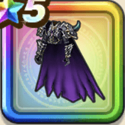

まじんのよろい上
攻略班 8.5点 / イオ属性耐性+5%究極エビルプリーストへの耐性+10%イオ属性耐性+5%メラ属性耐性+5%ヒャド属性耐性+5%【ゴドハン】スキルの体技ダメージ+4%メラ属性斬撃・体技ダメージ+8%【夜間】メラ属性斬撃・体技ダメージ+2%
くわしい特徴
【レベル別習得スキル】 Lv1イオ属性耐性+5% Lv5究極エビルプリーストへの耐性+10% Lv8イオ属性耐性+5% Lv10【ゴドハン】スキルの体技ダメージ+4% Lv12メラ属性斬撃・体技ダメージ+8% Lv15【夜間】メラ属性斬撃・体技ダメージ+2% Lv20メラ属性耐性+5% Lv23ヒャド属性耐性+5% Lv25攻撃力+15 Lv25【呪い】守備力-30 【限界突破スキル】 1凸攻撃力+10 2凸すばやさ+12 3凸守備力+10 4凸さいだいHP+12